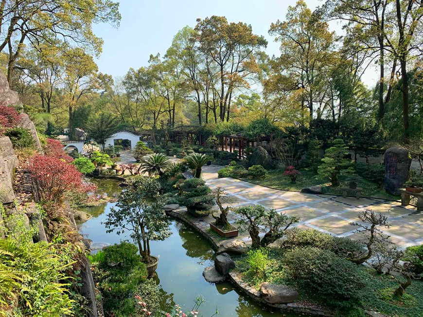
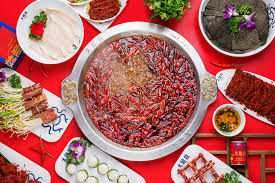
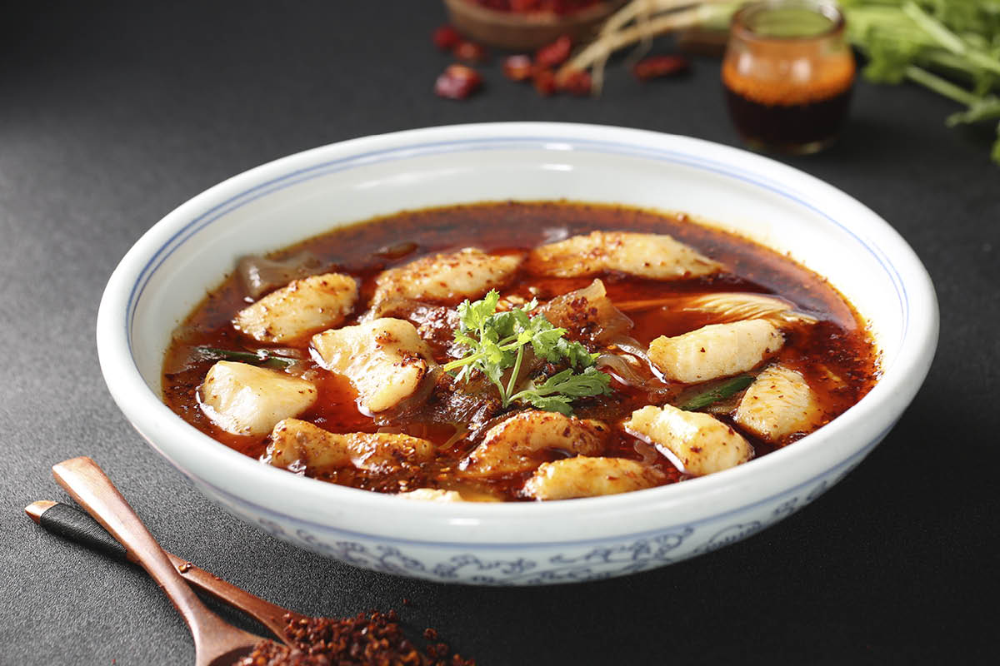

Explore Chongqing – Where Mountains, Hot Pot, and History Ignite the Senses



Chongqing, a megacity in southwest China, defies ordinary city norms—it’s a “mountain city” where skyscrapers cling to steep hills, rivers (Yangtze and Jialing) crisscross below, and the air hums with the aroma of spicy hot pot. A trip here is an adventure: navigating its famous “no-flat-streets” on foot or by cable car, wandering ancient towns hidden in the hills, and letting your taste buds handle the bold, fiery flavors of Sichuan-Chongqing cuisine.

Nature lovers will thrill at the Three Gorges (a short cruise from Chongqing, with towering cliffs and winding rivers), Nanshan Botanical Garden (where cherry blossoms and azaleas bloom amid mountain views), and Ciqikou Ancient Town’s riverside lanes (lined with old trees and stone bridges). History buffs can step back in time at Hongyan Village (a WWII-era revolutionary base), Liberation Monument (a 1940s landmark symbolizing Chongqing’s freedom), and Huguang Guild Hall (a 300-year-old complex of traditional Chinese halls for merchants).
And the food? It’s all about heat and heart. Chongqing Hot Pot—with its numbing-spicy broth and endless ingredients—is a social ritual not to be missed. Spicy Boiled Fish, with tender fish in a fiery chili broth, showcases the city’s love for bold flavors. For a quick snack, Stinky Tofu (fried until crispy, with a pungent aroma and spicy dip) is a local favorite. By the end of your trip, you’ll understand why Chongqing is called “China’s Spiciest City”—and why visitors keep coming back for more.

Travel Tips for Chongqing
Best Time to Visit:
Tip 1:Spring (March–April): Mild (12°C–22°C), blooming flowers at Nanshan Botanical Garden, and less humidity—ideal for hiking or cable car rides.
Tip 2: Autumn (September–November): Cool (15°C–25°C), clear skies for Three Gorges cruises, and perfect weather for hot pot (no summer sweat or winter chill).
Tip 3: Avoid summer (June–August): Sweltering (30°C–38°C) and humid; winter (December–February) is cool (5°C–12°C) but foggy (can obscure river views).
Transportation:
Tip 1: Getting to Chongqing:Fly to Chongqing Jiangbei International Airport (CKG)—take Metro Line 3 (40 mins, 5 CNY) to downtown. High-speed trains from Chengdu (1.5 hours, ~100 CNY) or Wuhan (4 hours, ~280 CNY) are convenient.
Tip 2: Getting Around:
Metro: Lines 1–9 cover major spots (e.g., Liberation Monument, Ciqikou); single ride 2–7 CNY (note: many stations have long escalators due to hills).
Cable Car: The “Yangtze River Cableway” (10 CNY/one-way) offers iconic river views; avoid peak hours (5 PM–7 PM) to skip lines.
Taxis/Didi: Taxis start at 10 CNY; Didi is better for trips to Nanshan (30 mins, ~50 CNY) or Three Gorges ports (1 hour, ~150 CNY).
Essential Tips:
Tip 1: Wear comfortable, non-slip shoes: Chongqing’s steep streets and stone steps are tough on feet.
Tip 2: Ask for “mild spicy” (wēn là) at hot pot restaurants—Chongqing’s broth is spicier than Chengdu’s.
Tip 3: Visit Liberation Monument at night: Neon lights illuminate the area, and street food stalls (selling stinky tofu, fried potatoes) line the streets.